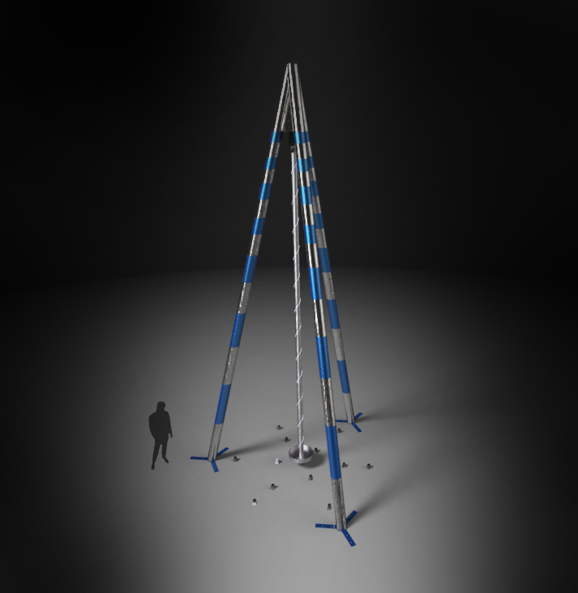
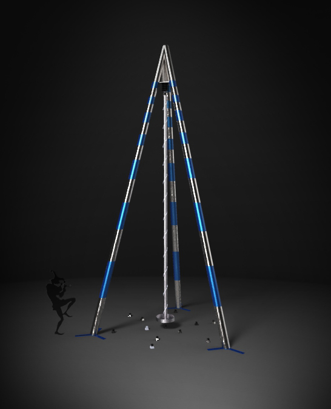
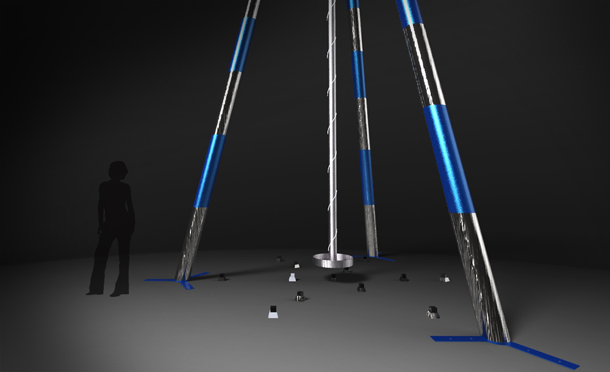
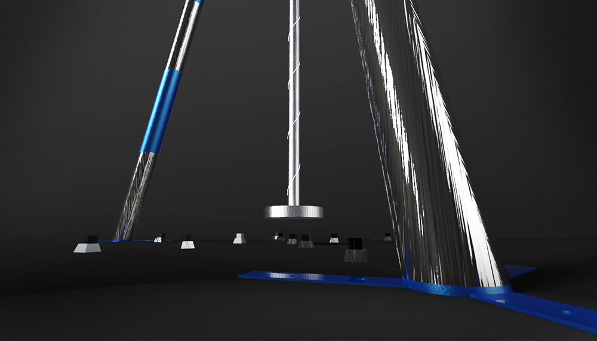
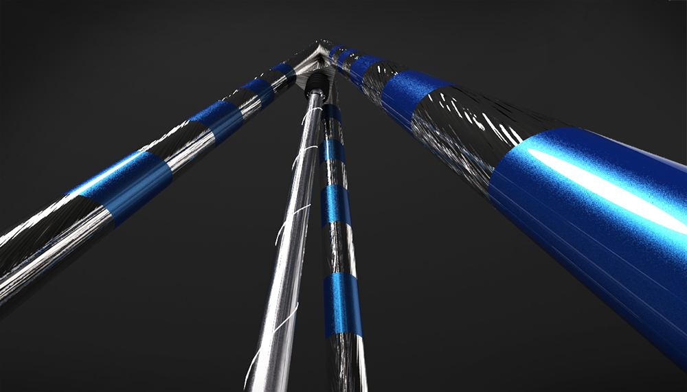
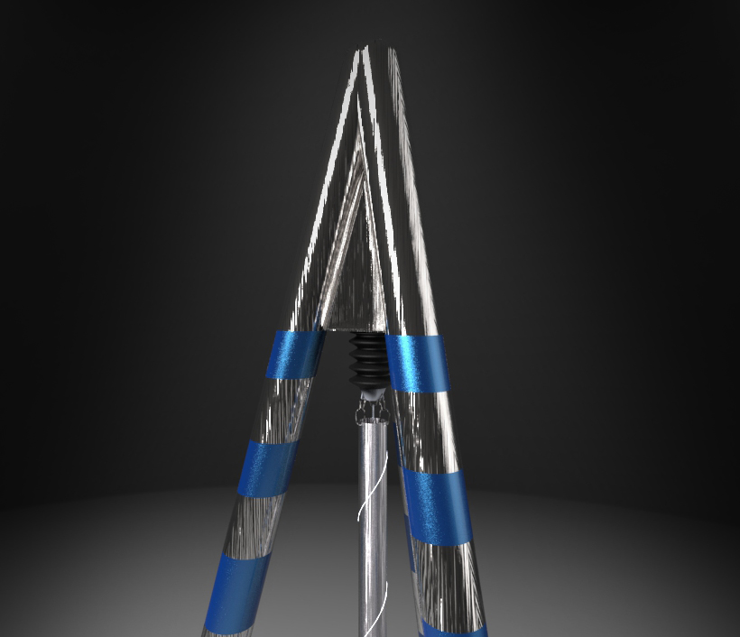
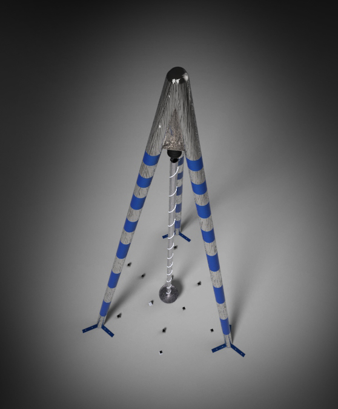

A Chaotic Affair
Metal, Magnets
30' x 15'
In Creation for Burning Man, 2013
This 30 foot tall exploration of chaos and interactivity utilizes the "butterfly effect" nature of magnetic pendulums to create unpredictable movements. Magnetic pendulums trace out beautiful patterns as the navigate the magnetic field creating phase space diagrams, Poincare sections, and fractals known as "fractal basin boundaries". Depending on the initial trajectory as pushed by the viewer, the pendulum swings, bumps, and slingshots around an array of 15 magnets, each of which are capable of pulling 500 pounds. At the base of the pendulum is a platform, allowing for the viewer to step on board to ride through the chaotic movements themselves.






